Ngày hội 26 tháng 3 tại các trường học ở Việt Nam là một sự kiện ý nghĩa, được tổ chức hàng năm để kỷ niệm ngày thành lập Đoàn Thanh niên Cộng sản Hồ Chí Minh (26/3/1931). Đây là dịp để học sinh, sinh viên ôn lại truyền thống vẻ vang của Đoàn, đồng thời tham gia các hoạt động sôi nổi nhằm phát huy tinh thần đoàn kết, sáng tạo và nhiệt huyết của tuổi trẻ. Tại trường Trung học phổ thông số 2 Tuy Phước, ngày hội thường diễn ra với nhiều hoạt động phong phú như hội trại, văn nghệ, thi đua học tập, các trò chơi tập thể, hay dọn dẹp vệ sinh môi trường. Những hoạt động này không chỉ mang lại niềm vui, mà còn giúp các bạn học sinh rèn luyện kỹ năng, ý thức trách nhiệm và tinh thần cống hiến vì cộng đồng, tiếp nối lý tưởng cách mạng của các thế hệ đi trước.
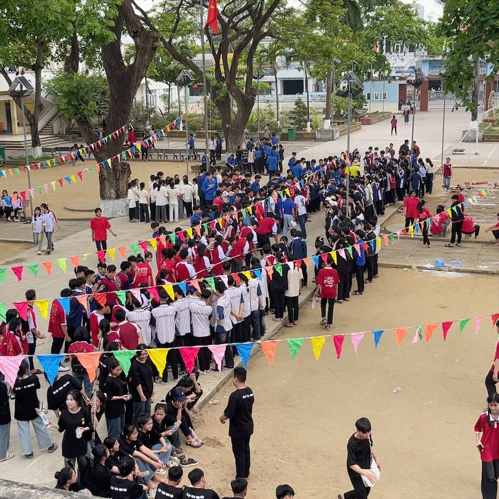
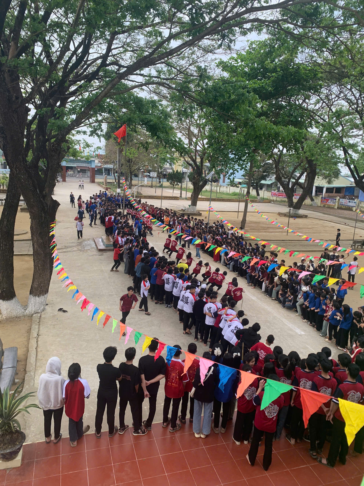
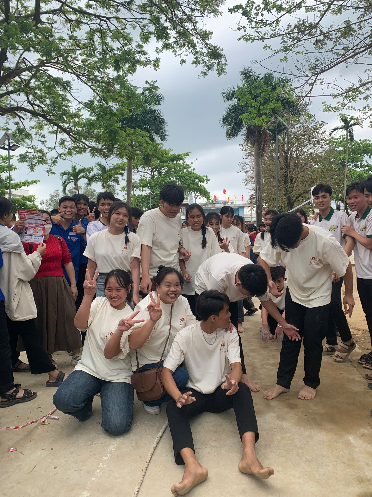
Trò Chơi
Bắt Vịt Từ 7h30 đến 8h00, tổ Sử - Địa KTPL sẽ phụ trách tổ chức trò chơi tại khu vực ô đất sân trường. Mỗi lớp cần chuẩn bị 02 khăn quàng để tham gia. Trò chơi diễn ra theo hình thức thi đấu giữa các khối, với mỗi lớp cử 02 học sinh (01 nam, 01 nữ) tham gia. Ban tổ chức sẽ yêu cầu học sinh đứng bao quanh khu đất để làm rào chắn vịt. Khi có hiệu lệnh bắt đầu, học sinh nam sẽ đuổi bắt vịt; đội nào bắt được vịt sớm nhất sẽ giành giải Nhất, đội bắt được con thứ hai đạt giải Nhì, và đội bắt được con thứ ba nhận giải Ba.
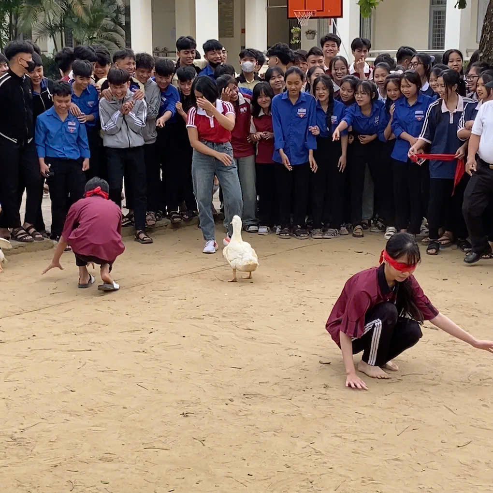
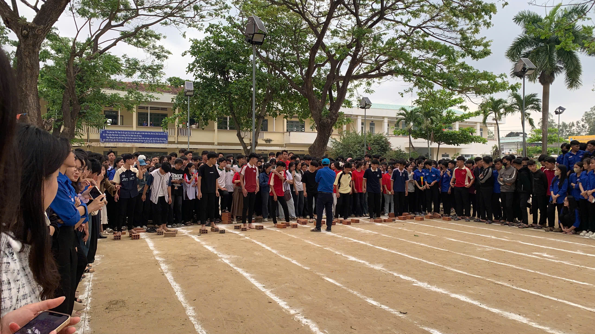
Đi Gạch Diễn ra từ 8h00 đến 8h30 tại khu vực ô đất sân trường, do tổ Toán phụ trách. Mỗi lớp cần chuẩn bị 03 viên gạch để tham gia. Luật chơi như sau: Thi đấu theo khối, mỗi lớp cử một cặp nam, nữ tham gia. Khi có hiệu lệnh, bạn nam di chuyển từ vạch xuất phát đến vạch đích chỉ bằng cách bước lên 3 viên gạch, không được chạm chân xuống đất. Đến vạch đích, bạn nữ sẽ tiếp tục di chuyển từ vạch đích về vạch xuất phát cũng trên 3 viên gạch. Đội nào về sớm nhất sẽ giành chiến thắng.
Chuyền Nước Từ 8h30 đến 9h00 tại khu vực ô đất sân trường, do tổ Vật lý phụ trách. Mỗi lớp cần chuẩn bị 01 thau nước và 01 chai nhựa (chai nước uống 0 độ để thống nhất). Luật chơi như sau: Thi đấu theo khối, mỗi lớp lập đội gồm 10 thành viên (5 nam, 5 nữ), xếp thành hàng dọc từ vạch xuất phát đến đích. Khi có hiệu lệnh, các thành viên chuyền nước bằng bụm tay từ người đầu tiên đến người cuối cùng, người cuối sẽ đổ nước vào chai. Thứ hạng sẽ dựa trên lượng nước trong chai
Kéo Co Diễn ra từ 9h00 đến 10h15 tại khu vực ô đất sân trường, do tổ Thể dục - Quốc phòng - Tin học phụ trách. Luật chơi như sau: Thi đấu theo khối, các lớp bốc thăm theo cặp trước để thi đấu loại trực tiếp. Mỗi lớp lập đội gồm 5 học sinh nam và 5 học sinh nữ. Ban tổ chức sẽ quy định vạch mức cán đích để xác định đội thắng trong mỗi lượt kéo co. Các đội được khuyến khích mặc trang phục đồng nhất để tham dự, tạo tinh thần đoàn kết và đồng bộ.
Mặc Quần Từ 10h15 đến 10h45 tại khu vực ô đất sân trường, do tổ Văn và Tiếng Anh phụ trách. Mỗi lớp cần chuẩn bị 1 chiếc quần đùi nam để tham gia. Luật chơi như sau: Thi đấu theo khối, mỗi lớp cử 1 học sinh nam tham gia. Khi có hiệu lệnh, các học sinh bắt đầu mặc quần đùi trong khu vực quy định mà không được dùng tay, có thể nằm, ngồi, lăn, lê để hoàn thành. Đội nào mặc quần nhanh nhất và hoàn thiện nhất sẽ được ban tổ chức công nhận chiến thắng.
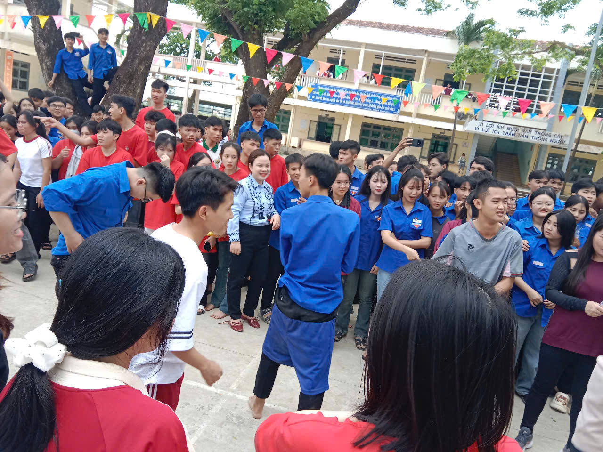
Hoạt Động
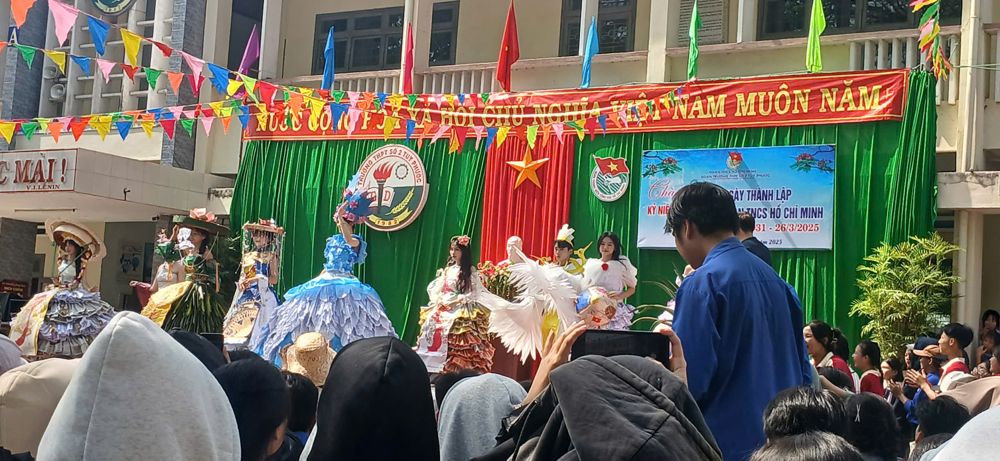
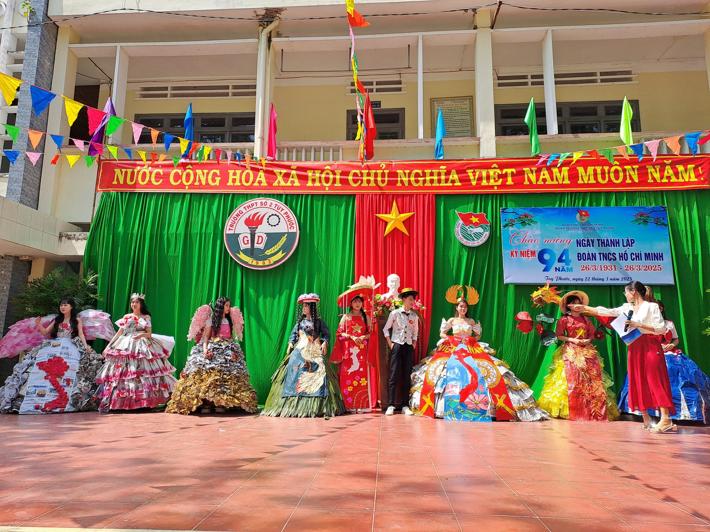
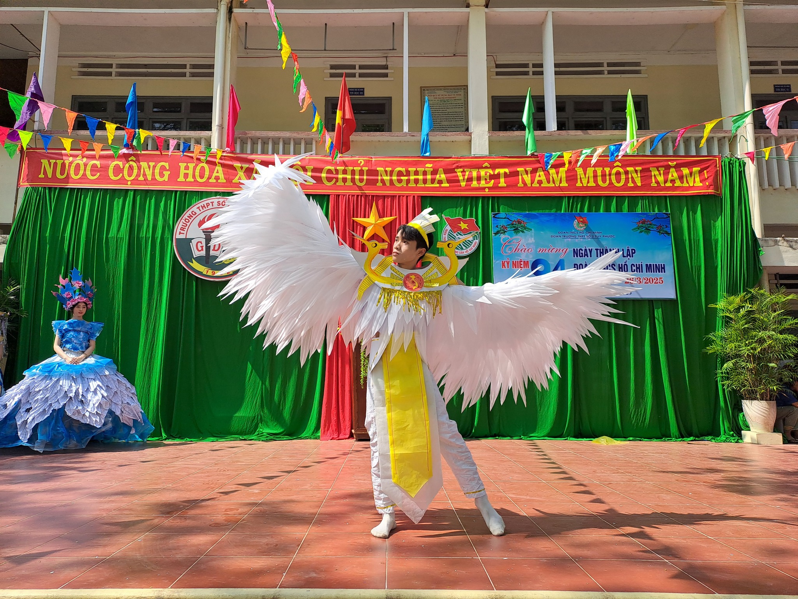
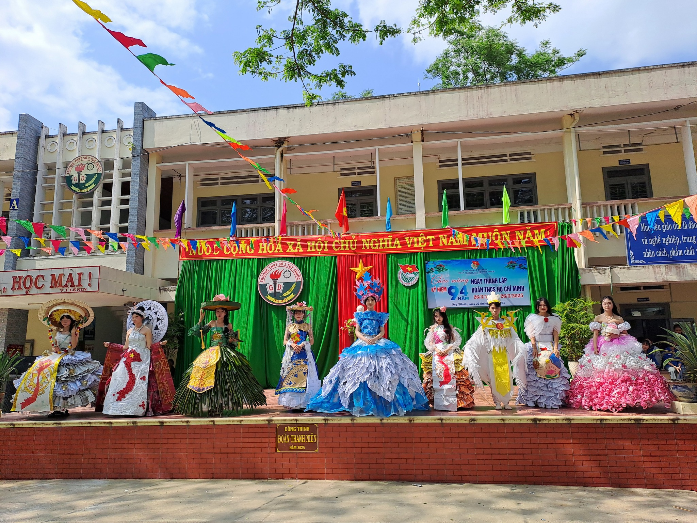
Trang Phục Tái Chế
Cuộc thi trang phục thời trang tái chế sẽ diễn ra từ 13h30 đến 14h15, do Ban Chấp hành Đoàn trường phụ trách tổ chức. Ban Giám khảo được Đoàn trường mời sẽ đảm nhận việc chấm giải. Sự kiện được tổ chức tại sân khấu chính, dành cho học sinh khối 10 và 11 tham gia. Trang phục biểu diễn cần phù hợp với thuần phong mỹ tục, đạo đức giáo dục và bản sắc văn hóa Việt Nam. Theo thể lệ, mỗi lớp chọn một trang phục dự thi (không bắt buộc cả nam và nữ), thiết kế từ các vật liệu tái chế như nhựa, giấy, bao... Khi lớp trình diễn trên sân khấu, bạn học sinh hỗ trợ sẽ thuyết minh ý nghĩa của trang phục trong 40 giây, với nội dung được chuẩn bị trước trên giấy và đọc từ hậu trường.
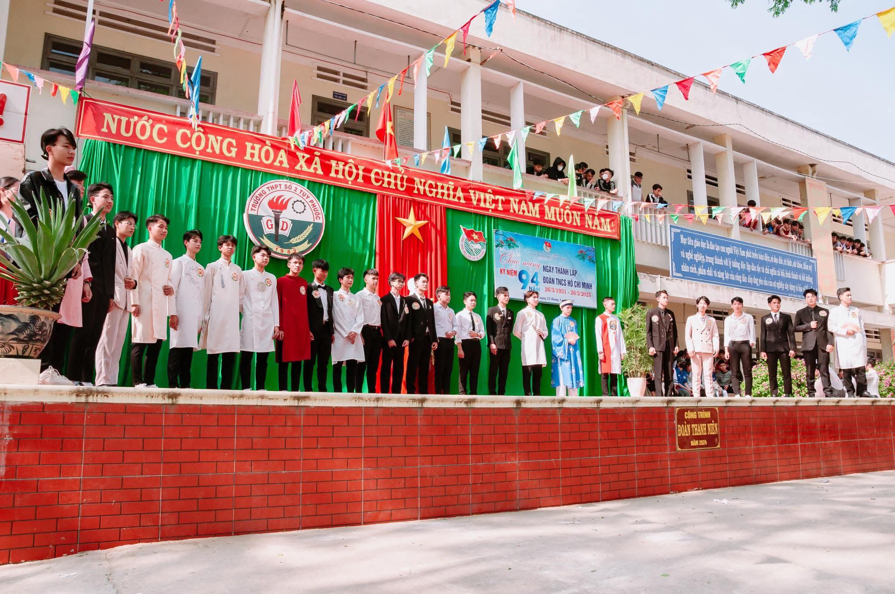
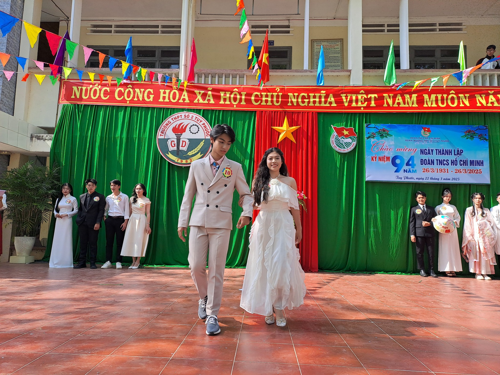
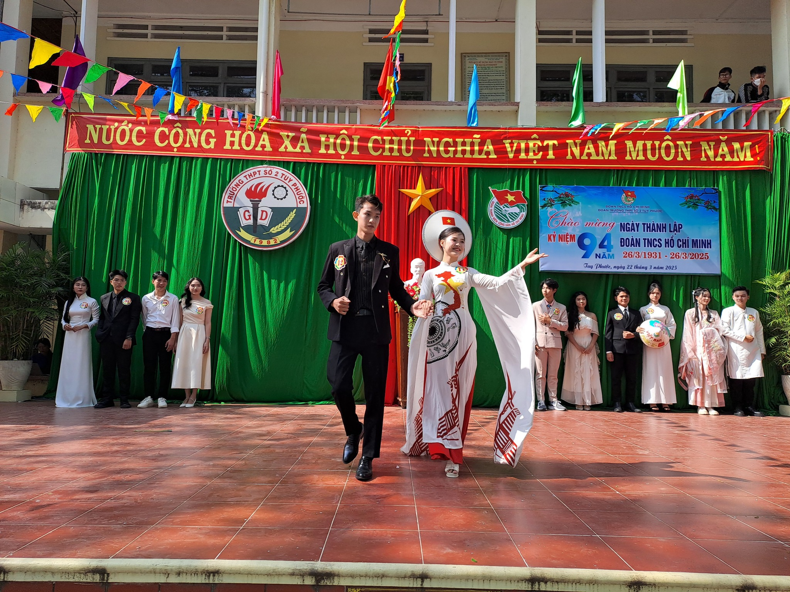
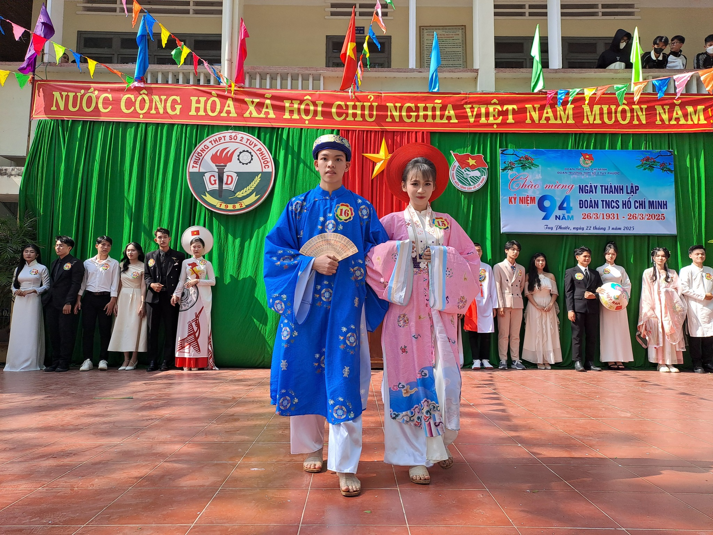
Nét Đẹp Học Đường
Cuộc thi “Nét đẹp học đường” diễn ra từ 14h15 đến 16h00 tại sân khấu chính, do BCH Đoàn trường tổ chức, Ban Giám khảo do Đoàn trường mời chấm giải. Mỗi lớp cử 2 thí sinh (1 nam, 1 nữ) tham gia 3 vòng thi: Vòng 1, thí sinh trình diễn trang phục tự chọn (catwalk) lịch thiệp, cung cấp thông tin cá nhân, Ban Giám khảo chọn 10 thí sinh (5 nam, 5 nữ) vào vòng 2. Vòng 2, thí sinh thể hiện tài năng (hát, múa, nhảy…) trong tối đa 5 phút, 8 thí sinh cao điểm nhất vào vòng 3. Vòng 3, thí sinh bốc thăm câu hỏi về vẻ đẹp học sinh, đạo đức, trách nhiệm… và trả lời trong tối đa 2 phút.
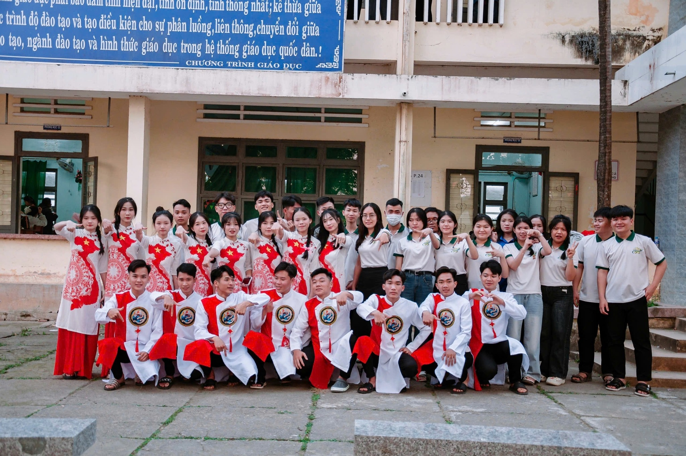
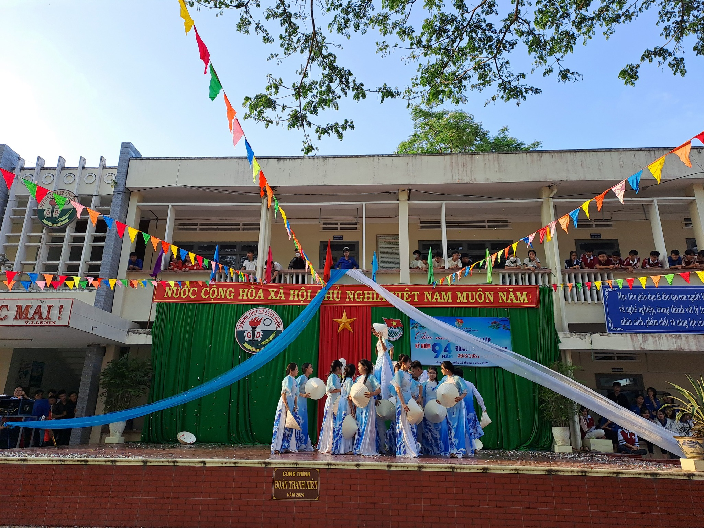
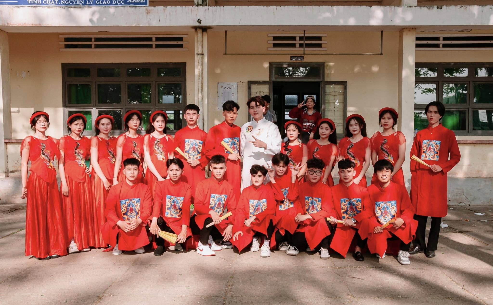
Văn Nghệ K12
Chương trình thi văn nghệ sẽ diễn ra từ 16h00 đến 17h15, do Đoàn trường phụ trách tổ chức. Ban giám khảo do Đoàn trường mời sẽ đảm nhận việc chấm giải. Sự kiện được tổ chức tại sân khấu chính, dành cho học sinh khối 12 tham gia. Mỗi lớp đăng ký một tiết mục biểu diễn như nhảy, múa,... với nội dung phù hợp với thuần phong mỹ tục, đạo đức giáo dục và bản sắc văn hóa Việt Nam.